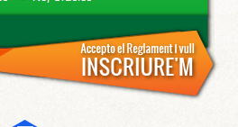
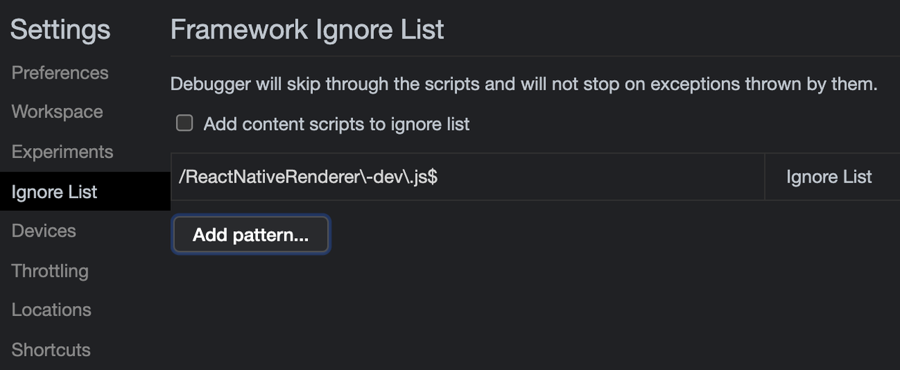
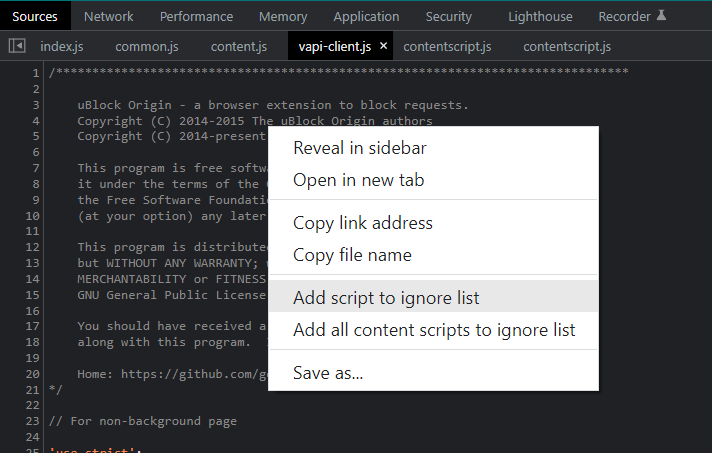
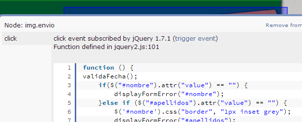
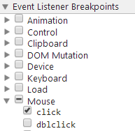
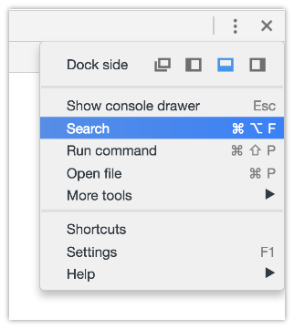

I'm using Chrome and my own website.
What I know from the inside:
1 ) I have a form where people sign up by clicking this orange image-
button:

2 ) I inspect it, and this is all it is: <img class="formSend"
src="images/botoninscribirse2.png">
3 ) At the top of the source code, there are tons of script sources. I
know which one the button calls because I coded it: <script
src="js/jquery2.js" type="text/javascript"></script>
4 ) Within that file, you could find: $(".formSend").click(function() {
... }); which is what is triggered by the button (to do a fairly complex form
validation and submit) and what I want is to be able to find that using
chrome dev tools on any website.
How can I find out where does the element call?
Listeners tab didn't work for me. So then I tried looking the click event
listeners, which seemed like a safe bet to me but... there's no jquery2.js
in there (and I wouldn't really know which file the code is so I'd waste time
checking all these...):

My $(".formSend").click(function() { ... }); function within jquery2.js
file is not there.
Jesse explains why :
"Finally, the reason why your function is not directly bound to the click
event handler is because jQuery returns a function that gets bound. jQuery's
function, in turn, goes through some abstraction layers and checks, and
somewhere in there, it executes your function."
As suggested by some of you I've collected the methods that worked in one
answer down below.
Answer
Solution 1: Ignore List (used to be "Blackbox")
Works great, minimal setup and no third parties. Documentation says:
When using the Sources panel of Chrome DevTools to step through code,
sometimes you pause on code that you don't recognize. You're probably paused
on the code of one of the Chrome Extensions that you've installed. To never
pause on extension code use Ignore List.
Here's the updated workflow:
- Pop open Chrome Developer Tools (
F12 or ⌘+⌥+i), go to settings (upper right, or F1). Pick the page/tab in the left nav/column named " Ignore List "
- You may want to check
Add content scripts to ignore list if you see too much noise in debugger

- This is where you put the RegEx pattern of the files you want Chrome to ignore while debugging. For example:
jquery\..*\.js (glob pattern/ human translation: jquery.*.js)
- If you want to skip files with multiple patterns you can add them using the pipe character,
|, like so: jquery\..*\.js|include\.postload\.js (which acts like an "or this pattern", so to speak. Or keep adding them with the "Add" button.
- Now continue to Solution 3 described down below.
Bonus tip! I use Regex101 regularly (but there are many others: ) to
quickly test my rusty regex patterns and find out where I'm wrong with the
step-by-step regex debugger. If you are not yet "fluent" in Regular
Expressions I recommend you start using sites that help you write and
visualize them such as http://buildregex.com/ and https://www.debuggex.com/
You can also use the context menu when working in the Sources panel. When
viewing a file, you can right-click in the editor and choose Ignore List.
This will add the file to the list in the Settings panel:

Solution 2: Visual Event

It's an excellent tool to have:
Visual Event is an open-source Javascript bookmarklet which provides
debugging information about events that have been attached to DOM elements.
Visual Event shows:
- Which elements have events attached to them
- The type of events attached to an element
- The code that will be run with the event is triggered
- The source file and line number for where the attached function was
defined (Webkit browsers and Opera only)
Solution 3: Debugging
You can pause the code when you click somewhere in the page, or when the DOM
is modified... and other kinds of JS breakpoints that will be useful to know.
You should apply blackboxing here to avoid a nightmare.
In this instance, I want to know what exactly goes on when I click the button.
- Open Dev Tools -> Sources tab, and on the right find
Event Listener Breakpoints:

-
Expand Mouse and select click
-
Now click the element (execution should pause), and you are now debugging the code. You can go through all code pressing F11 (which is Step in ). Or go back a few jumps in the stack. There can be a ton of jumps
Solution 4: Fishing keywords
With Dev Tools activated, you can search the whole codebase (all code in all
files) with ⌘+⌥+F or:

and searching #envio or whatever the tag/class/id you think starts the party
and you may get somewhere faster than anticipated.
Be aware sometimes there's not only an img but lots of elements stacked, and
you may not know which one triggers the code.
If this is a bit out of your knowledge, take a look at Chrome's tutorial on
debugging.
Suggest
Solution 1: Ignore List (used to be "Blackbox")
Works great, minimal setup and no third parties. Documentation says:
When using the Sources panel of Chrome DevTools to step through code,
sometimes you pause on code that you don't recognize. You're probably paused
on the code of one of the Chrome Extensions that you've installed. To never
pause on extension code use Ignore List.
Here's the updated workflow:
- Pop open Chrome Developer Tools (
F12 or ⌘+⌥+i), go to settings (upper right, or F1). Pick the page/tab in the left nav/column named " Ignore List "
- You may want to check
Add content scripts to ignore list if you see too much noise in debugger
- This is where you put the RegEx pattern of the files you want Chrome to ignore while debugging. For example:
jquery\..*\.js (glob pattern/ human translation: jquery.*.js)
- If you want to skip files with multiple patterns you can add them using the pipe character,
|, like so: jquery\..*\.js|include\.postload\.js (which acts like an "or this pattern", so to speak. Or keep adding them with the "Add" button.
- Now continue to Solution 3 described down below.
Bonus tip! I use Regex101 regularly (but there are many others: ) to
quickly test my rusty regex patterns and find out where I'm wrong with the
step-by-step regex debugger. If you are not yet "fluent" in Regular
Expressions I recommend you start using sites that help you write and
visualize them such as http://buildregex.com/ and https://www.debuggex.com/
You can also use the context menu when working in the Sources panel. When
viewing a file, you can right-click in the editor and choose Ignore List.
This will add the file to the list in the Settings panel:
Solution 2: Visual Event
It's an excellent tool to have:
Visual Event is an open-source Javascript bookmarklet which provides
debugging information about events that have been attached to DOM elements.
Visual Event shows:
- Which elements have events attached to them
- The type of events attached to an element
- The code that will be run with the event is triggered
- The source file and line number for where the attached function was
defined (Webkit browsers and Opera only)
Solution 3: Debugging
You can pause the code when you click somewhere in the page, or when the DOM
is modified... and other kinds of JS breakpoints that will be useful to know.
You should apply blackboxing here to avoid a nightmare.
In this instance, I want to know what exactly goes on when I click the button.
- Open Dev Tools -> Sources tab, and on the right find
Event Listener Breakpoints:
-
Expand Mouse and select click
-
Now click the element (execution should pause), and you are now debugging the code. You can go through all code pressing F11 (which is Step in ). Or go back a few jumps in the stack. There can be a ton of jumps
Solution 4: Fishing keywords
With Dev Tools activated, you can search the whole codebase (all code in all
files) with ⌘+⌥+F or:
and searching #envio or whatever the tag/class/id you think starts the party
and you may get somewhere faster than anticipated.
Be aware sometimes there's not only an img but lots of elements stacked, and
you may not know which one triggers the code.
If this is a bit out of your knowledge, take a look at Chrome's tutorial on
debugging.